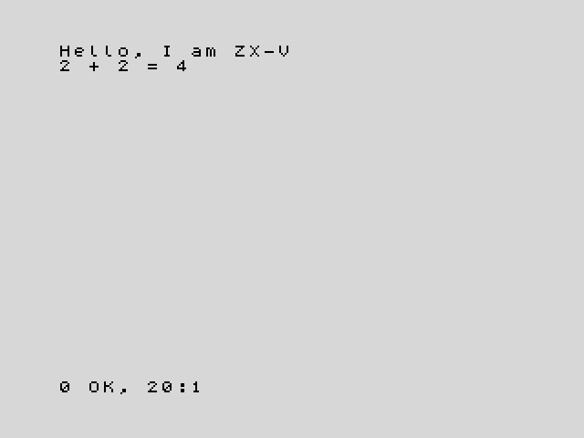

1. First steps
In this chapter you will learn what a program is, how to type one, how to
run it and how to change it. You will meet your first keywords: PRINT,
RUN, GO TO, REM and NEW.
You need ZX-V in front of you: the real machine or the emulator. If you have not started it yet, Getting started explains how. When it starts, you see a light grey screen with a black bar at the bottom. That bar belongs to the editor, the place where you type.
Commands: the machine does it now
Type this and press Enter:
PRINT "Hello"
The screen changes and shows the word Hello. At the bottom you see a
message like 0 OK, 0:1: it means "everything went well". Press any key to go
back to the editor.
PRINT is a keyword: a word the machine understands. It writes on the
screen whatever comes after it. Text goes between double quotes (").
Numbers and sums do not need them:
PRINT 2+2
This writes 4. You can type keywords in capitals or in small letters, as you
like; when you press Enter the machine shows them in capitals.
What you just typed are commands: lines without a number, which the machine carries out as soon as you press Enter, and then forgets.
Programs: the machine remembers
A program is a list of lines that the machine keeps, to carry them out later. Each program line starts with a line number. Type these two lines, pressing Enter after each one:
10 PRINT "Hello, I am ZX-V"
20 PRINT "2 + 2 = ";2+2
This time nothing happens on the screen: the lines go into the listing,
the program kept in the editor. To run the program, type the command RUN
and press Enter. You see:

The machine has carried out line 10, then line 20, always in the order of
the line numbers. The ; in line 20 joins two things on the same line of
the screen: the text and the result of the sum.
The message at the bottom, 0 OK, 20:1, says that the program finished
without problems, and where: at line 20, statement 1. Press a key to go back
to the editor, where your program is still there. (That key is also typed
into the editor; if it was a letter, just delete it with Backspace.)
Why go up in tens? So that there is room for new lines in between: if you later want something between lines 10 and 20, you can number it 15.
The editor in two minutes
The editor works like a small word processor. These keys are all you need for now:
| Key | What it does |
|---|---|
| Enter | Stores the line (or runs it, if it has no number) |
| Arrow keys | Move the cursor through the listing |
| Backspace, Delete | Erase to the left of the cursor, or under it |
| Ctrl+End | Takes you to the empty line at the end, where new lines are typed |
| Esc | Undoes the changes to the line you are on. While a program runs, it stops it: this is the BREAK key |
| Tab | The EDIT key: opens the editor's menu |
To change a line, move up to it with the arrow keys, fix it and press Enter. You can also type it again, with the same number: the new one replaces the old one.
To add a line, type it with its number on the empty line at the bottom of the listing. The editor puts it in its place, ordered by number. After Enter, the cursor goes to the line that follows the one you typed; press Ctrl+End to go back to the empty line.
To delete a line, type just its number and press Enter.
To erase the whole program and start again, type NEW.
If a line has a mistake, the machine makes a buzz when you press Enter, leaves
the cursor where the problem is and shows a message in red above the bar,
such as C Nonsense in BASIC. Fix it and press Enter again.
The editor guide explains everything else: the menu, how to renumber, and more keys.
A program that never stops
Type NEW to start afresh, then this program:
10 PRINT "ZX-V ";
20 GO TO 10
GO TO 10 sends the program back to line 10, so it repeats forever. The ;
at the end of line 10 means "do not start a new line": the next PRINT
goes on the same line. Type RUN and the screen fills up.
When the screen is full, the machine asks scroll? at the bottom. Press any
key to see one more screenful. To stop the program, press Esc (BREAK).
The message D BREAK - CONT repeats, 10:1 tells you that you stopped it at
line 10.
Errors
The machine tells you when something goes wrong. Try this program (remember
NEW first):
10 PRINT "Your score:"
20 PRINT score
Run it. Line 10 works, but then you get 2 Variable not found, 20:1. Every
error message has a code (2), a description and the place: line 20,
statement 1. Here, the machine does not know what score is. You will learn
to fix that in the next chapter.
Errors do no harm: your program is still there, and you can fix it and run it again.
Notes for yourself: REM
A line that starts with REM (from "remark") is ignored by the machine. Use
it to explain what your program does:
10 REM My first program
20 PRINT "Hello"
Try it
- Write a program that prints your name on one line and your city on the next one.
- Change the program from "A program that never stops" so that it prints
your name instead of
ZX-V. Then delete the;at the end of line 10 and run it again. What changes?
Hint
For the first one, use two lines, each with its own PRINT. For the second,
move up to line 10 with the arrow keys, change the text between quotes and
press Enter. Without the ;, each PRINT starts a new line.